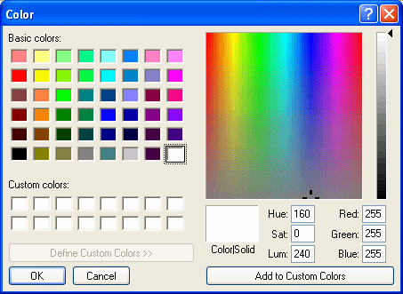

The Window painter has two Color drop-down toolbars on PainterBar3 that display colors that you can use for the background and foreground of components of the window. Initially, the drop-down toolbars display these color selections:
The Windows system colors display in the same order as in the TextColor and BackColor lists in the Properties view for a control. They are labeled with letters that indicate the type of display element they represent:
The Windows system colors are those defined by the user in the Windows Control Panel, so if you use these colors in your window, the window colors will change to match the user's settings at runtime.
You can define your own custom colors for use in windows, user objects, and DataWindow objects.
 To define and maintain custom colors:
To define and maintain custom colors:
Select Design>Custom Colors from the menu bar.
The Color dialog box displays.

Click in an empty color box in the list of custom colors.
Choose an existing color or create the color you want. You can start with one of the basic colors and customize it in the palette to the right by dragging the color indicator with the mouse. You can also specify precise values to define the color.
When you have the color you want, click Add to Custom Colors.
The new color displays in the list of custom colors.
Select the new color in the list of custom colors.
Click OK.
The new color displays in the Color drop-down toolbars and is available in all windows, user objects, and DataWindow objects you create.
PowerBuilder saves custom colors in the [Colors] section of the PowerBuilder initialization file, so they are available across sessions.
You can assign colors to controls using the Painterbar or the Properties view. The page in the Properties view that you use depends on the control. For some controls you can change only the background color, and for others you can change neither the foreground nor the background color. These controls include CommandButton, PictureButton, PictureHyperLink, Picture, Scrollbar, TrackBar, ProgressBar, and OLE controls.
 To assign a color using the PainterBar:
To assign a color using the PainterBar:
Select the control.
Select either the foreground or background color button from the PainterBar.
Select a color from the drop-down toolbar.